SVG Utilities¶
SVG filter definitions, geometric annotations, boolean shape operations,
vector field visualizations, and SVG import helpers. All visual classes
inherit from VObject or VCollection and support
the full set of animation methods.
Filters & Clip Paths¶
ClipPath¶
- class ClipPath(*objects)¶
SVG clip path definition containing one or more shape objects. Register with
canvas.add_def()and apply via theclip_pathstyling attribute.- Parameters:
objects – One or more VObject shapes that define the clip region.
- clip_ref()¶
Returns the
url(#...)reference string for use inclip_path.
- to_svg_def(time)¶
Returns the
<clipPath>SVG element string.
Example: Clipping a rectangle with a circle
clip = ClipPath(Circle(r=120, cx=960, cy=540)) canvas.add_def(clip) rect = Rectangle(400, 400, clip_path=clip.clip_ref())
ClipPath
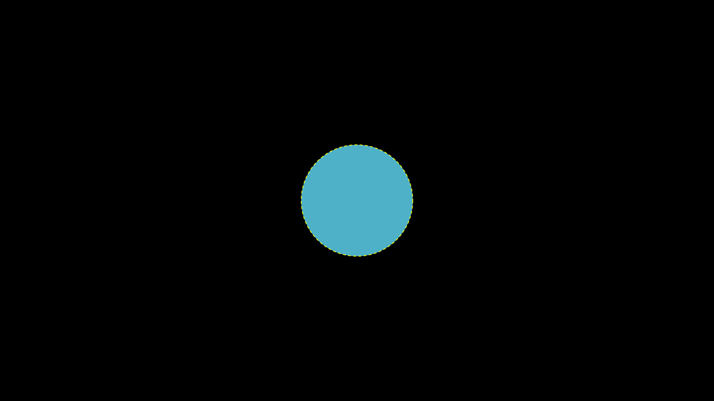
"""ClipPath clipping a rectangle with a circle.""" import sys, os; sys.path.insert(0, os.path.join(os.path.dirname(__file__), '../..')) from vectormation.objects import * args = parse_args() v = VectorMathAnim('_ref_out', verbose=args.verbose) v.set_background() clip = ClipPath(Circle(r=150, cx=960, cy=540)) v.add_def(clip) rect = Rectangle(500, 500, fill='#58C4DD', fill_opacity=0.9, stroke='#FFFFFF', stroke_width=3, clip_path=clip.clip_ref()) rect.center_to_pos(posx=960, posy=540) # Show the clip circle outline for reference outline = Circle(r=150, cx=960, cy=540, fill_opacity=0, stroke='#FFFF00', stroke_width=2, stroke_dasharray='8,6') v.add(rect, outline) if args.for_docs:
BlurFilter¶
- class BlurFilter(std_deviation=4)¶
SVG Gaussian blur filter definition. Register with
canvas.add_def()and apply to objects via styling:obj.styling.filter = blur.filter_ref().- Parameters:
std_deviation (float) – Blur radius.
- filter_ref()¶
Returns the
url(#...)reference string.
Example: Applying a Gaussian blur
blur = BlurFilter(std_deviation=8) canvas.add_def(blur) text = Text('Blurred', filter=blur.filter_ref())
Gaussian Blur
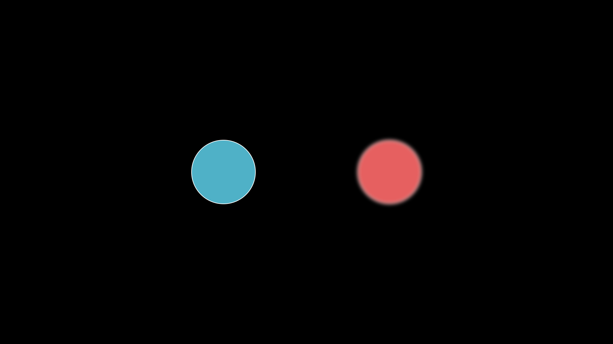
"""Gaussian blur applied to shapes.""" import sys, os; sys.path.insert(0, os.path.join(os.path.dirname(__file__), '../..')) from vectormation.objects import * args = parse_args() v = VectorMathAnim('_ref_out', verbose=args.verbose) v.set_background() sharp = Circle(r=100, cx=700, cy=540, fill='#58C4DD', fill_opacity=0.9, stroke='#FFFFFF', stroke_width=2) blurred = Circle(r=100, cx=1220, cy=540, fill='#FF6B6B', fill_opacity=0.9, stroke='#FFFFFF', stroke_width=2) from vectormation._base_helpers import _wrap_to_svg _wrap_to_svg(blurred, lambda inner, t: "<g filter='url(#gblur)'><defs><filter id='gblur' x='-50%' y='-50%' width='200%' height='200%'>" "<feGaussianBlur stdDeviation='6'/></filter></defs>" + inner + "</g>", 0) v.add(sharp, blurred) if args.for_docs:
DropShadowFilter¶
- class DropShadowFilter(dx=4, dy=4, std_deviation=4, color='#000', opacity=0.5)¶
SVG drop shadow filter definition. Register with
canvas.add_def().- Parameters:
dx (float) – Horizontal shadow offset.
dy (float) – Vertical shadow offset.
std_deviation (float) – Blur radius.
color (str) – Shadow colour.
opacity (float) – Shadow opacity.
- filter_ref()¶
Returns the
url(#...)reference string.
Example: Adding a drop shadow
shadow = DropShadowFilter(dx=6, dy=6, std_deviation=4, color='#000') canvas.add_def(shadow) rect = Rectangle(200, 100, filter=shadow.filter_ref())
Drop Shadow
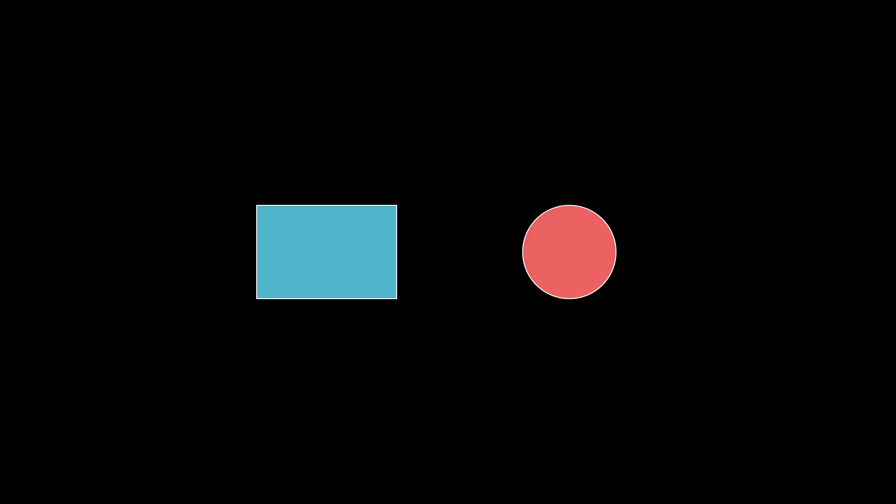
"""DropShadowFilter applied to shapes.""" import sys, os; sys.path.insert(0, os.path.join(os.path.dirname(__file__), '../..')) from vectormation.objects import * args = parse_args() v = VectorMathAnim('_ref_out', verbose=args.verbose) v.set_background() rect = Rectangle(300, 200, fill='#58C4DD', fill_opacity=0.9, stroke='#FFFFFF', stroke_width=2) rect.center_to_pos(posx=700, posy=540) rect.drop_shadow(dx=8, dy=8, blur=6) circ = Circle(r=100, cx=1220, cy=540, fill='#FF6B6B', fill_opacity=0.9, stroke='#FFFFFF', stroke_width=2) circ.drop_shadow(dx=8, dy=8, blur=6) v.add(rect, circ) if args.for_docs:
Geometric Annotations¶
Angle¶
- class Angle(vertex, p1, p2, radius=36, label=None, label_radius=None, label_font_size=36, **styling)
Bases:
VCollectionAngle indicator arc between two rays meeting at a vertex. All three position parameters accept
(x, y)tuples orCoorobjects for time-varying angles.- Parameters:
vertex – Vertex point
(x, y)orCoor.p1 – First ray endpoint
(x, y)orCoor.p2 – Second ray endpoint
(x, y)orCoor.radius (float) – Arc radius in pixels.
label –
Nonefor no label,Truefor a dynamic degree label, or a string (e.g.r'\theta') for a static TeX label.label_radius (float) – Distance from vertex to label (defaults to
radius * 1.75).label_font_size (float) – Font size for the label.
- set_radius(new_radius, start=0, end=None, easing=smooth)¶
Animate the angle arc radius to new_radius.
Example: Angle indicator with label
v = (960, 540) a = (1100, 540) b = (1060, 400) angle = Angle(v, a, b, radius=50, label=True)
Angle
"""Angle shape.""" import sys, os; sys.path.insert(0, os.path.join(os.path.dirname(__file__), '../..')) from vectormation.objects import * args = parse_args() v = VectorMathAnim('_ref_out', verbose=args.verbose) v.set_background() vertex = (960, 540) p1 = (1260, 540) p2 = (1160, 340) l1 = Line(x1=vertex[0], y1=vertex[1], x2=p1[0], y2=p1[1], stroke='#aaa', stroke_width=3) l2 = Line(x1=vertex[0], y1=vertex[1], x2=p2[0], y2=p2[1], stroke='#aaa', stroke_width=3) angle = Angle(vertex, p1, p2, radius=60, stroke='#58C4DD', stroke_width=3) v.add(l1, l2, angle) if args.for_docs:
Angle with Label
"""Angle indicator with label.""" import sys, os; sys.path.insert(0, os.path.join(os.path.dirname(__file__), '../..')) from vectormation.objects import * args = parse_args() v = VectorMathAnim('_ref_out', verbose=args.verbose) v.set_background() vertex = (960, 540) p1 = (1260, 540) p2 = (1160, 340) l1 = Line(x1=vertex[0], y1=vertex[1], x2=p1[0], y2=p1[1], stroke='#aaa', stroke_width=3) l2 = Line(x1=vertex[0], y1=vertex[1], x2=p2[0], y2=p2[1], stroke='#aaa', stroke_width=3) angle = Angle(vertex, p1, p2, radius=70, label=True, stroke='#58C4DD', stroke_width=3) v.add(l1, l2, angle) if args.for_docs:
RightAngle¶
- class RightAngle(vertex, p1, p2, size=18, **styling)
Bases:
VCollectionRight angle indicator (small square) at a vertex between two perpendicular lines.
- Parameters:
vertex (tuple) – Vertex point
(x, y).p1 (tuple) – First ray endpoint.
p2 (tuple) – Second ray endpoint.
size (float) – Side length of the square indicator.
Example: Right angle indicator
right = RightAngle((500, 500), (600, 500), (500, 400), size=20)
Right Angle
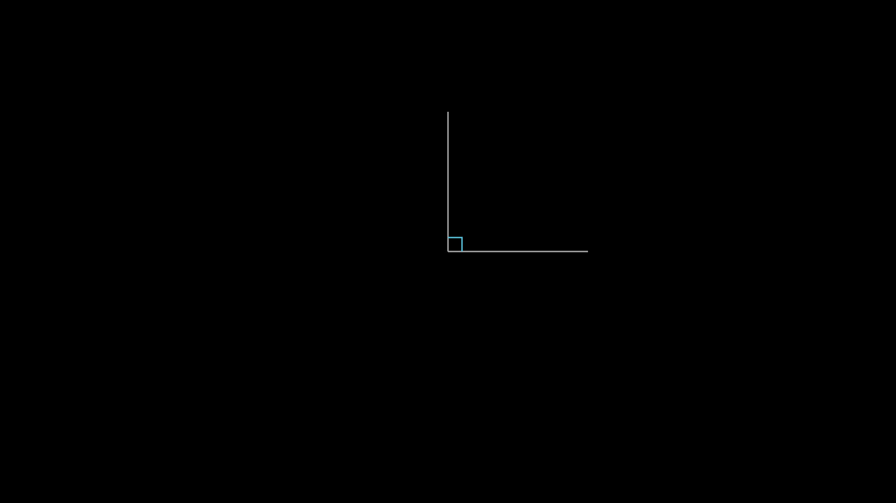
"""Right angle indicator.""" import sys, os; sys.path.insert(0, os.path.join(os.path.dirname(__file__), '../..')) from vectormation.objects import * args = parse_args() v = VectorMathAnim('_ref_out', verbose=args.verbose) v.set_background() # Draw two perpendicular lines and a right angle marker vertex = (960, 540) p1 = (1260, 540) p2 = (960, 240) l1 = Line(x1=vertex[0], y1=vertex[1], x2=p1[0], y2=p1[1], stroke='#aaa', stroke_width=3) l2 = Line(x1=vertex[0], y1=vertex[1], x2=p2[0], y2=p2[1], stroke='#aaa', stroke_width=3) ra = RightAngle(vertex, p1, p2, size=30, stroke='#58C4DD', stroke_width=3) v.add(l1, l2, ra) if args.for_docs:
Cross¶
- class Cross(size=36, cx=960, cy=540, **styling)
Bases:
VCollectionX-mark shape (two crossing lines), useful for indicating errors or crossing out elements.
- Parameters:
size (float) – Full width/height of the cross.
cx (float) – Centre x.
cy (float) – Centre y.
Example: Cross mark
x_mark = Cross(size=50, cx=400, cy=300, stroke='#FF0000')
Cross Mark
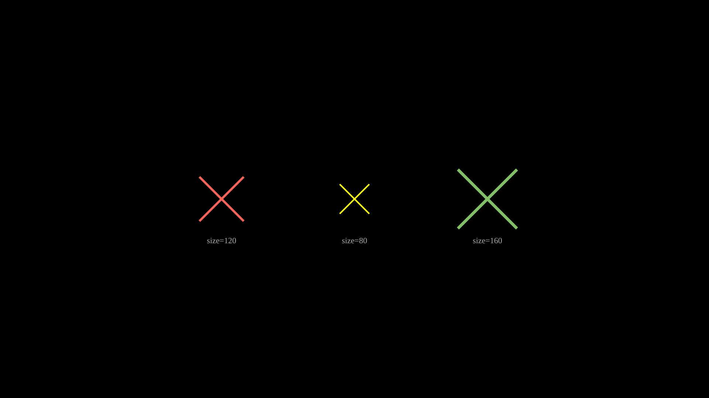
"""Cross mark (X shape).""" import sys, os; sys.path.insert(0, os.path.join(os.path.dirname(__file__), '../..')) from vectormation.objects import * args = parse_args() v = VectorMathAnim('_ref_out', verbose=args.verbose) v.set_background() c1 = Cross(cx=600, cy=540, size=120, stroke='#FC6255', stroke_width=6) c2 = Cross(cx=960, cy=540, size=80, stroke='#FFFF00', stroke_width=4) c3 = Cross(cx=1320, cy=540, size=160, stroke='#83C167', stroke_width=8) label1 = Text('size=120', x=600, y=660, font_size=22, fill='#aaa', text_anchor='middle') label2 = Text('size=80', x=960, y=660, font_size=22, fill='#aaa', text_anchor='middle') label3 = Text('size=160', x=1320, y=660, font_size=22, fill='#aaa', text_anchor='middle') v.add(c1, c2, c3, label1, label2, label3) if args.for_docs:
Zoomed Inset & Overlays¶
ZoomedInset¶
- class ZoomedInset(canvas, source, display, frame_color='#FFFF00', display_color='#FFFF00', frame_width=2, creation=0, z=999)¶
Bases:
VObjectMagnified inset view of a region on the canvas. Renders a nested SVG
<svg>element with a viewBox matching the source region, displayed at the display region’s position and size.- Parameters:
canvas – The
VectorMathAnimcanvas.source (tuple) –
(x, y, width, height)of the region to magnify.display (tuple) –
(x, y, width, height)of the display viewport.frame_color (str) – Colour of the source frame rectangle.
display_color (str) – Colour of the display border.
frame_width (float) – Stroke width of the frame and border.
- move_source(x, y, start, end=None, easing=smooth)¶
Animate the source region position to
(x, y).
Example: Zoomed inset with animated source
inset = ZoomedInset( canvas, source=(800, 400, 200, 200), display=(1400, 100, 400, 400), ) canvas.add(inset) inset.move_source(900, 450, start=0, end=2)
Zoomed Inset (Animated)
"""ZoomedInset with animated source position.""" import sys, os; sys.path.insert(0, os.path.join(os.path.dirname(__file__), '../..')) from vectormation.objects import * args = parse_args() v = VectorMathAnim('_ref_out', verbose=args.verbose) v.set_background() # Small scene to magnify sq = Square(side=60, x=330, y=470, fill='#4ECDC4', stroke='#FFFFFF', stroke_width=2) circ = Circle(r=25, cx=500, cy=520, fill='#E84D60', stroke='#FFFFFF', stroke_width=2) tri = EquilateralTriangle(side_length=50, cx=400, cy=600, fill='#FFFF00', fill_opacity=0.7, stroke='#FFFF00', stroke_width=2) v.add(sq, circ, tri) inset = ZoomedInset( v, source=(300, 440, 160, 160), display=(800, 200, 500, 500), frame_color='#FFFF00', display_color='#FFFF00', frame_width=2, ) v.add(inset) # Animate the source region position inset.move_source(400, 480, start=0.5, end=2.5) if args.for_docs: v.export_video('docs/source/_static/videos/ref_zoomed_inset_animated.mp4', fps=30, end=3) if not args.for_docs:
Spotlight¶
- class Spotlight(target=(960, 540), radius=120, color='#000000', opacity=0.7, creation=0, z=10)¶
Bases:
VObjectDark overlay with a circular cutout – draws attention to a point or object. The overlay covers the entire canvas and uses an even-odd fill rule to create the bright area.
- Parameters:
target – Centre of the spotlight. An
(x, y)tuple or a VObject (uses its centre).radius (float) – Radius of the bright area.
color (str) – Overlay colour (usually dark).
opacity (float) – Overlay opacity (0 = invisible, 1 = fully opaque).
- set_target(target, start=0, end=None, easing=smooth)¶
Move the spotlight to a new target (point or VObject).
- set_radius(value, start=0, end=None, easing=smooth)¶
Animate the spotlight radius.
Example: Animated spotlight
dot = Dot(cx=400, cy=300) spot = Spotlight(target=dot, radius=80, opacity=0.8) spot.set_target((960, 540), start=1, end=3) spot.set_radius(200, start=1, end=3)
Spotlight
"""Animated spotlight (Spotlight with moving target).""" import sys, os; sys.path.insert(0, os.path.join(os.path.dirname(__file__), '../..')) from vectormation.objects import * args = parse_args() v = VectorMathAnim('_ref_out', verbose=args.verbose) v.set_background() c1 = Circle(r=60, cx=400, cy=540, fill='#58C4DD', fill_opacity=0.8) c2 = Circle(r=60, cx=960, cy=540, fill='#FF6B6B', fill_opacity=0.8) c3 = Circle(r=60, cx=1520, cy=540, fill='#83C167', fill_opacity=0.8) v.add(c1, c2, c3) spot = Spotlight(target=c1, radius=100, opacity=0.75) spot.set_target(c2, start=0.5, end=1.5) spot.set_target(c3, start=2.0, end=3.0) v.add(spot) if args.for_docs: v.export_video('docs/source/_static/videos/ref_spotlight.mp4', fps=30, end=3.5) if not args.for_docs:
Cutout¶
- class Cutout(hole_x=660, hole_y=340, hole_w=600, hole_h=400, color='#000', opacity=0.7, rx=0, ry=0, creation=0, z=99)¶
Bases:
VObjectFull-screen overlay with a rectangular cutout (spotlight effect). Unlike
Spotlight, the cutout is rectangular and supports rounded corners viarx/ry.- Parameters:
hole_x (float) – Hole top-left x.
hole_y (float) – Hole top-left y.
hole_w (float) – Hole width.
hole_h (float) – Hole height.
color (str) – Overlay colour.
opacity (float) – Overlay opacity.
rx (float) – Hole corner radius x (for rounded cutouts).
ry (float) – Hole corner radius y.
- set_hole(x=None, y=None, w=None, h=None, start=0, end=None, easing=smooth)¶
Animate hole position and/or size. Pass only the parameters you want to change.
- surround(obj, buff=20, start=0, end=None, easing=smooth)¶
Move the cutout hole to surround a VObject’s bounding box with buff pixels of padding.
Example: Rectangular cutout overlay
title = Text('Important', x=960, y=300, font_size=72) cutout = Cutout(opacity=0.8, rx=12, ry=12) cutout.surround(title, buff=30) # Animate the cutout to a new position cutout.set_hole(x=200, y=200, w=400, h=200, start=1, end=3)
Cutout Overlay
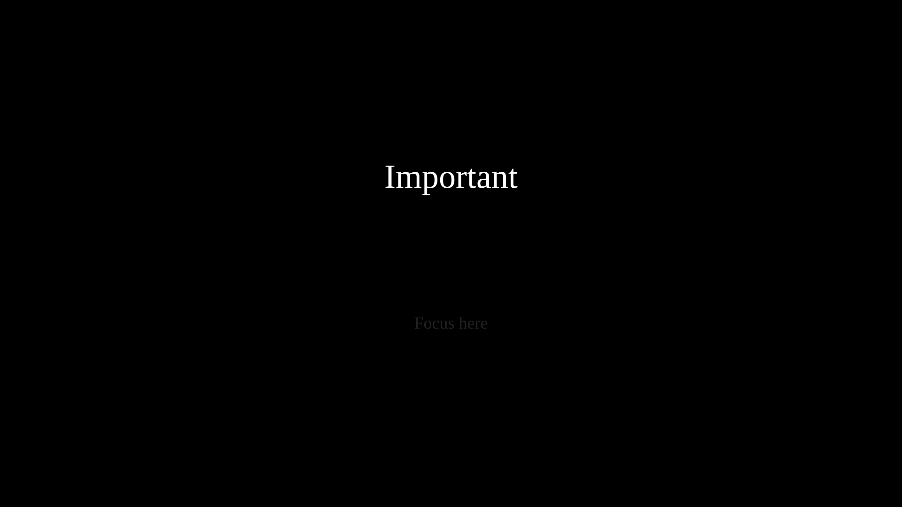
"""Rectangular cutout overlay (Cutout class).""" import sys, os; sys.path.insert(0, os.path.join(os.path.dirname(__file__), '../..')) from vectormation.objects import * args = parse_args() v = VectorMathAnim('_ref_out', verbose=args.verbose) v.set_background() title = Text('Important', x=960, y=400, font_size=72, fill='#FFFFFF', text_anchor='middle') subtitle = Text('Focus here', x=960, y=700, font_size=36, fill='#aaa', text_anchor='middle') v.add(title, subtitle) cutout = Cutout(opacity=0.8, rx=12, ry=12) cutout.surround(title, buff=30) v.add(cutout) if args.for_docs:
AnimatedBoundary¶
- class AnimatedBoundary(target, colors=None, cycle_rate=1.0, buff=8, stroke_width=3, creation=0, z=0)¶
Bases:
VObjectAnimated colour-cycling dashed border around another VObject. The border colour smoothly cycles through the given colours and the dash pattern scrolls along the perimeter.
- Parameters:
target (VObject) – The object to surround with an animated border.
colors (list) – Colours to cycle through (defaults to
['#58C4DD', '#FF6B6B', '#83C167', '#FFFF00']).cycle_rate (float) – Full colour cycles per second.
buff (float) – Extra padding around the target’s bounding box.
stroke_width (float) – Border stroke width.
Example: Animated colour-cycling border
rect = Rectangle(300, 200) border = AnimatedBoundary(rect, cycle_rate=0.5, buff=12)
Colour-Cycling Border
"""Animated color-cycling border (AnimatedBoundary).""" import sys, os; sys.path.insert(0, os.path.join(os.path.dirname(__file__), '../..')) from vectormation.objects import * args = parse_args() v = VectorMathAnim('_ref_out', verbose=args.verbose) v.set_background() rect = Rectangle(300, 200, fill='#1a1a2e', fill_opacity=0.9) rect.center_to_pos(posx=960, posy=540) border = AnimatedBoundary(rect, cycle_rate=0.5, buff=10, stroke_width=4) v.add(rect, border) if args.for_docs: v.export_video('docs/source/_static/videos/ref_color_cycle_border.mp4', fps=30, end=4) if not args.for_docs:
Boolean Shape Operations¶
Boolean operations combine two shapes using SVG clip paths. All four
classes inherit from a common _BooleanOp base (itself a
VObject) and support the standard animation methods.
Example: Boolean operations
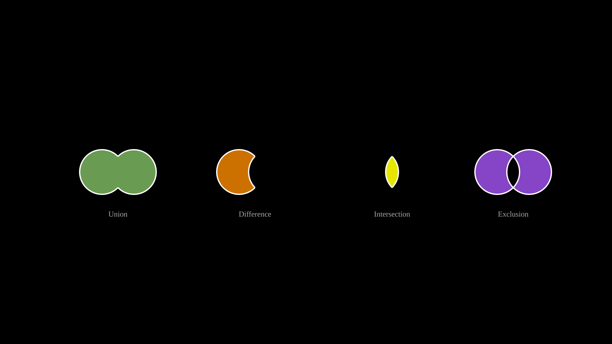
Union, Difference, Intersection, and Exclusion of two circles.
v = VectorMathAnim('_ref_out', verbose=args.verbose)
v.set_background()
# Union
c1a = Circle(r=70, cx=320, cy=540)
c1b = Circle(r=70, cx=420, cy=540)
u = Union(c1a, c1b, fill='#83C167', fill_opacity=0.8)
l1 = Text('Union', x=370, y=680, font_size=24, fill='#aaa', text_anchor='middle')
# Difference
c2a = Circle(r=70, cx=750, cy=540)
c2b = Circle(r=70, cx=850, cy=540)
d = Difference(c2a, c2b, fill='#FF8C00', fill_opacity=0.8)
l2 = Text('Difference', x=800, y=680, font_size=24, fill='#aaa', text_anchor='middle')
# Intersection
c3a = Circle(r=70, cx=1180, cy=540)
c3b = Circle(r=70, cx=1280, cy=540)
inter = Intersection(c3a, c3b, fill='#FFFF00', fill_opacity=0.9)
l3 = Text('Intersection', x=1230, y=680, font_size=24, fill='#aaa', text_anchor='middle')
# Exclusion
c4a = Circle(r=70, cx=1560, cy=540)
c4b = Circle(r=70, cx=1660, cy=540)
ex = Exclusion(c4a, c4b, fill='#A855F7', fill_opacity=0.8)
l4 = Text('Exclusion', x=1610, y=680, font_size=24, fill='#aaa', text_anchor='middle')
v.add(u, d, inter, ex, l1, l2, l3, l4)
if args.for_docs:
v.write_frame(filename='docs/source/_static/videos/boolean_ops.svg')
if not args.for_docs:
Union¶
Difference¶
Intersection¶
Exclusion¶
Vector Field Visualizations¶
ArrowVectorField¶
- class ArrowVectorField(func, x_range=(60, 1860, 120), y_range=(60, 1020, 120), max_length=80, creation=0, z=0, **styling)¶
Bases:
VCollectionVector field visualization using arrows. Arrows are placed on a grid and normalized so the longest arrow has length max_length.
- Parameters:
func (callable) –
f(x, y) -> (vx, vy)vector function.x_range (tuple) –
(min, max, step)for horizontal sampling.y_range (tuple) –
(min, max, step)for vertical sampling.max_length (float) – Maximum arrow length in pixels.
Example: Arrow vector field
def field(x, y): return (y - 540, -(x - 960)) vf = ArrowVectorField(field, x_range=(100, 1820, 150), y_range=(100, 980, 150))
Arrow Vector Field
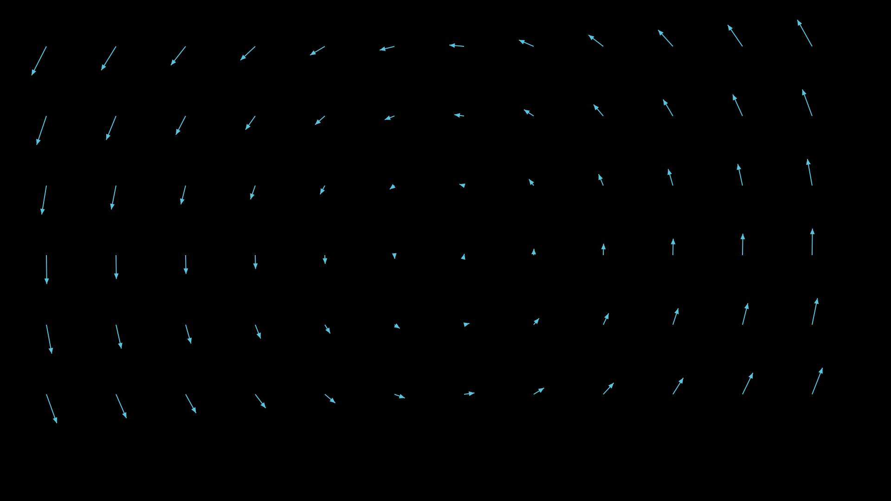
"""Arrow vector field (ArrowVectorField).""" import sys, os; sys.path.insert(0, os.path.join(os.path.dirname(__file__), '../..')) from vectormation.objects import * args = parse_args() v = VectorMathAnim('_ref_out', verbose=args.verbose) v.set_background() def field(x, y): return (y - 540, -(x - 960)) vf = ArrowVectorField(field, x_range=(100, 1820, 150), y_range=(100, 980, 150), max_length=70, stroke='#58C4DD') v.add(vf) if args.for_docs:
StreamLines¶
- class StreamLines(func, x_range=(60, 1860, 200), y_range=(60, 1020, 200), n_steps=40, step_size=5, creation=0, z=0, **styling)¶
Bases:
VCollectionFlow lines for a vector field. Each seed point on the grid is integrated forward through the field to produce a polyline.
- Parameters:
func (callable) –
f(x, y) -> (vx, vy)vector function.x_range (tuple) –
(min, max, step)for seed grid.y_range (tuple) –
(min, max, step)for seed grid.n_steps (int) – Number of integration steps per stream line.
step_size (float) – Step size per integration step.
Example: Stream lines for a swirl field
def swirl(x, y): dx, dy = x - 960, y - 540 return (-dy, dx) streams = StreamLines(swirl, n_steps=60, step_size=8, stroke='#83C167')
Stream Lines
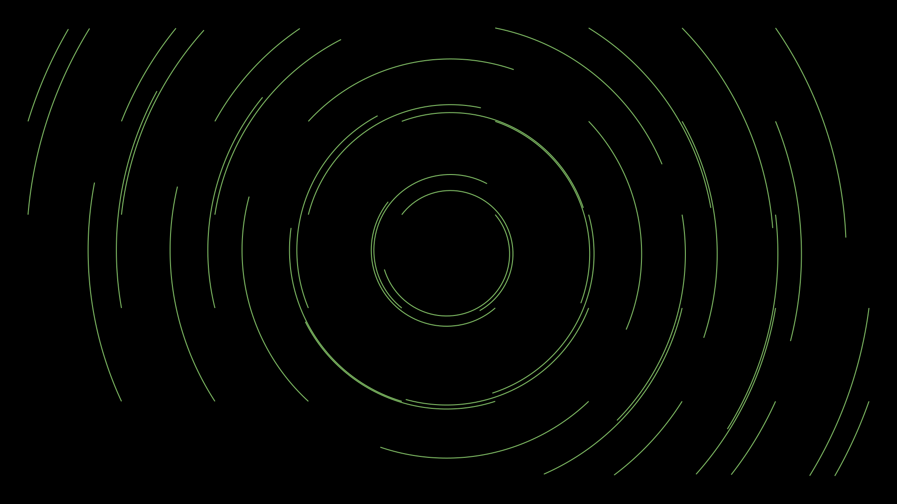
"""StreamLines for a swirl field.""" import sys, os; sys.path.insert(0, os.path.join(os.path.dirname(__file__), '../..')) from vectormation.objects import * args = parse_args() v = VectorMathAnim('_ref_out', verbose=args.verbose) v.set_background() def swirl(x, y): dx, dy = x - 960, y - 540 return (-dy, dx) streams = StreamLines(swirl, n_steps=60, step_size=8, stroke='#83C167', stroke_width=2) v.add(streams) if args.for_docs:
Geometry Helpers¶
ConvexHull¶
- class ConvexHull(*items, **styling)¶
Bases:
PolygonConvex hull polygon around a set of points or VObjects. Uses Andrew’s monotone chain algorithm.
- Parameters:
items –
(x, y)tuples or VObject instances (their centres are used).
Example: Convex hull around dots
d1 = Dot(cx=300, cy=300) d2 = Dot(cx=600, cy=200) d3 = Dot(cx=500, cy=500) hull = ConvexHull(d1, d2, d3, (400, 450), stroke='#58C4DD', fill_opacity=0.1)
Convex Hull
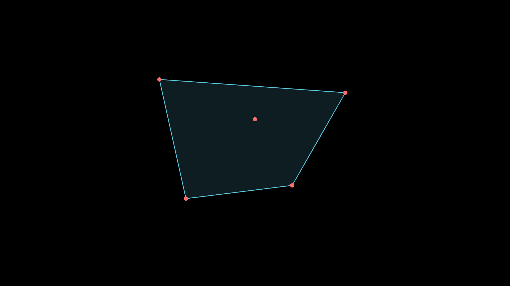
"""Convex hull around dots.""" import sys, os; sys.path.insert(0, os.path.join(os.path.dirname(__file__), '../..')) from vectormation.objects import * args = parse_args() v = VectorMathAnim('_ref_out', verbose=args.verbose) v.set_background() d1 = Dot(cx=600, cy=300, r=8, fill='#FF6B6B') d2 = Dot(cx=1300, cy=350, r=8, fill='#FF6B6B') d3 = Dot(cx=1100, cy=700, r=8, fill='#FF6B6B') d4 = Dot(cx=700, cy=750, r=8, fill='#FF6B6B') d5 = Dot(cx=960, cy=450, r=8, fill='#FF6B6B') hull = ConvexHull(d1, d2, d3, d4, d5, stroke='#58C4DD', stroke_width=3, fill='#58C4DD', fill_opacity=0.15) v.add(hull, d1, d2, d3, d4, d5) if args.for_docs:
brace_between_points¶
- brace_between_points(p1, p2, direction=None, label=None, buff=0, depth=18, creation=0, z=0, **styling)¶
Create a
Bracebetween two arbitrary points. If direction isNone, the brace points perpendicular to the line from p1 to p2.- Parameters:
p1 (tuple) – Start point
(x, y).p2 (tuple) – End point
(x, y).direction –
'up','down','left','right', orNonefor automatic.label (str) – Optional label text.
buff (float) – Buffer distance from the line.
depth (float) – Depth of the brace curve.
- Returns:
A
Braceobject.
Example: Brace between two points
brace = brace_between_points((400, 500), (800, 500), direction='down', label='width')
Brace Between Points
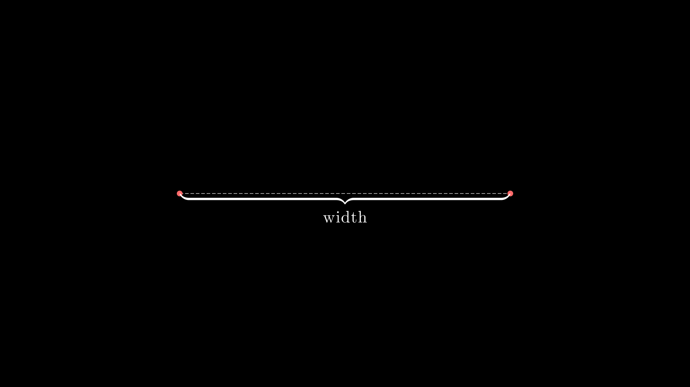
"""Brace between two points.""" import sys, os; sys.path.insert(0, os.path.join(os.path.dirname(__file__), '../..')) from vectormation.objects import * args = parse_args() v = VectorMathAnim('_ref_out', verbose=args.verbose) v.set_background() d1 = Dot(cx=500, cy=540, r=8, fill='#FF6B6B') d2 = Dot(cx=1420, cy=540, r=8, fill='#FF6B6B') line = DashedLine(x1=500, y1=540, x2=1420, y2=540, stroke='#aaa', stroke_width=2) brace = brace_between_points((500, 540), (1420, 540), direction='down', label='width') v.add(line, d1, d2, brace) if args.for_docs:
SVG Import¶
from_svg¶
- from_svg(element, **styles)¶
Convert a single BeautifulSoup SVG element into a VObject. Handles presentation attributes and inline CSS style attributes.
Supported SVG tags:
path,rect,circle,ellipse,line,polygon,polyline,text,g(group).The
transform="translate(...)"attribute is applied automatically.- Parameters:
element – A BeautifulSoup element.
styles – Extra styling keyword arguments merged into the result.
- Returns:
A VObject corresponding to the SVG element.
- Raises:
NotImplementedError – For unsupported SVG tags.
Example: Parsing an SVG element
from bs4 import BeautifulSoup from vectormation.objects import from_svg soup = BeautifulSoup('<circle cx="100" cy="100" r="50"/>', 'xml') circle = from_svg(soup.find('circle'), fill='#FF0000')
from_svg_file¶
- from_svg_file(filepath, creation=0, z=0, **styles)¶
Load an SVG file and return a
VCollectionof all parseable elements. Elements inside<g>groups are handled recursively.- Parameters:
filepath (str) – Path to the SVG file.
creation (float) – Creation time for all loaded objects.
z (float) – Z-index for all loaded objects.
styles – Extra styling keyword arguments.
- Returns:
A
VCollectioncontaining the parsed shapes.
Note
Requires the
beautifulsoup4andlxmlpackages (lazy-imported).Example: Loading an SVG file
from vectormation.objects import from_svg_file logo = from_svg_file('logo.svg', creation=0) logo.center_to_pos(posx=960, posy=540) logo.scale(factor=0.5, start=0)